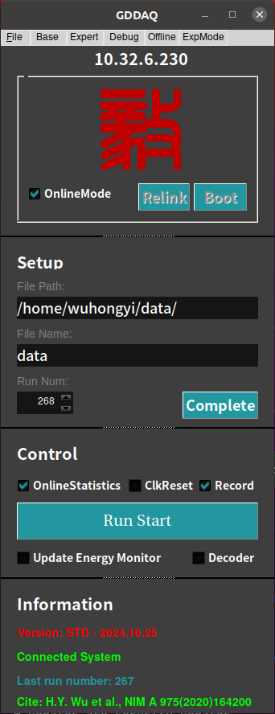
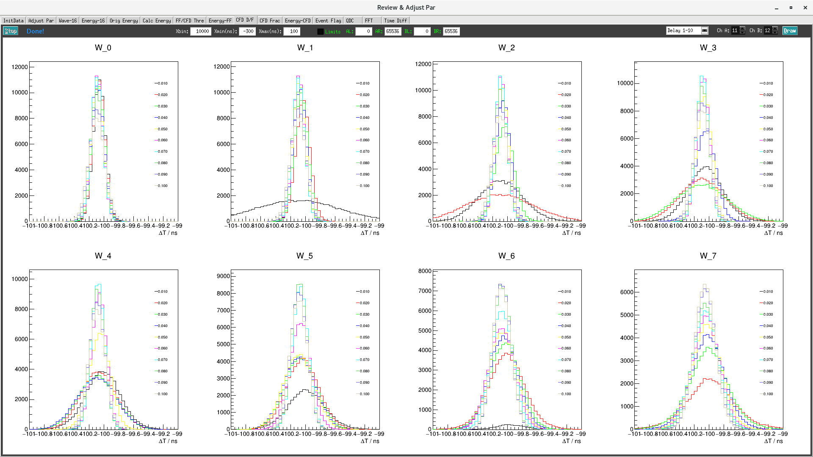
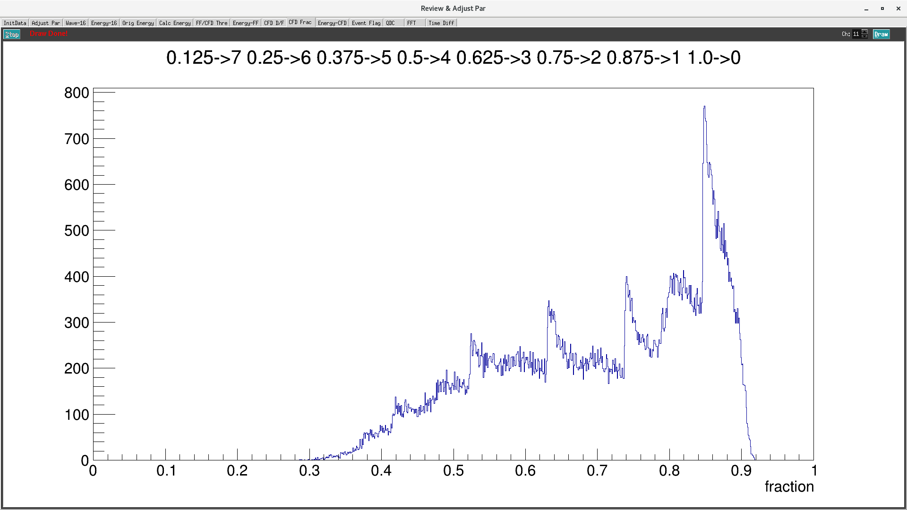

图形交互界面¶
配置好 parset 内参数文件
进入 GUI 目录，执行以下命令即可弹出主控制界面
./pku
主控制界面¶
主界面最上方是 File、Base、Expert、Debug、Offiline 五个下拉栏。里面的子菜单如下所示：
- File
Exit
About
- Base
Base Setup
Trigger Filter
Energy
CFD
QDC
Decimation
Copy Pars
Save2File
- Expert
Module Variables
CSRA
Logic Set
- Debug
Hist & XDT
Trace & Baseline
- Offiline
Adjust Par
Simulation(暂未实现)
开启获取主界面之后，选择 Online Mode 选项表示在线模式，需要连接机箱，该模式下可使用所有的功能（包括离线分析功能）。不选择**Online Mode** 选项则表示开启离线模式，可设置、修改获取参数，分析已采集波形。
选择、或者不选择 Online Mode 选项之后，按 Boot 按钮开启初始化过程，可看到最下方 Information 栏目中的状态变化。
系统初始化成功后，再次确认 Setup 栏中的获取文件存放路径、文件名、文件编号是否有问题，如果有问题则直接修改，确认之后按 Complete。
确认 Setup 栏中的信息之后， Control 栏中的主按钮 RunStart 则开启，此时点击该按钮，获取则开启，按钮状态更改为 RunStop，再次点击该按钮，获取结束，运行的 Run Num 号码自动加一。再次点击 RunStart 开启下轮获取。
当前，获取之前可通过最上方的下拉栏里面的子菜单来调节、修改参数。获取数据时请勿操作 Control 栏之外的所有选项。
Control 栏内的 Online Statistics 选项开启则获取每 3 s 向 OnineStatistics 程序发送时时每路信号的输入率、输出率信息。
点击 Update Energy Monitor 选项一次，则将所有采集卡内部寄存器中每路的一维能谱发送到 Online Statistics 程序，发送该信息会导致一定的死时间，请不要频繁点击该选项。
Base¶
本下拉栏中调节内容为基础内容，任何使用Pixie16获取系统的人员都应该熟悉并掌握其调节技巧。
Base Setup¶
控制界面¶

界面下方的 Status 显示为 绿色的 Ready 时表示可操作该界面，否则需要等待。
界面中 Module 后面的参数用来选择调节的采集卡模块， Load 表示读取该采集卡的参数数值， Apply 表示将界面中的数值写入采集卡。
界面下方的 Select Channel 后面的参数表示选择用来将界面上该通道的参数复制给其它通道，点击后面 Copy 完成复制，然后需要 Apply 来将参数写入采集卡。
Base Setup 页面控制每个通道的模拟增益，便置和极性。单击顶部控制栏中 Monitor 的 Trace＆Baseline 可以查看从 ADC 读取的信号，同时调整这些参数。该页面可以显示模块的一个或全部 16 个通道。您可以在 Hist＆XDT 页面中设置每个模块每个通道的采样间隔以捕获更长的时间帧。单击 Draw 以更新图形。
来自探测器的脉冲应落在 0 到 16383（例如 14位）的范围内，基线在 ~1638 处允许漂移和/或下冲，并且在上限处没有削波。如果存在削波，请调整增益和偏置，或单击 AdjustOffset 按钮让软件将 DC 偏置设置为适当的水平。
由于 FPGA 中的触发/滤波电路仅作用于正极性脉冲，因此负脉冲在输入 FPGA 处进行极性反转，并且 ADC 波形显示中显示的波形包括此可选的反转。因此，设置通道的极性，使得来自探测器的脉冲以正幅度（上升沿）出现。
在 Base Setup 选项卡中，您可以设置在列表模式运行中获取的波形的总跟踪长度和预触发跟踪延迟。
跟踪延迟(trace delay)不能长于跟踪长度(trace length)，并且对于每个 Pixie-16 通道，跟踪延迟和跟踪长度的最大值也有限制。
参数介绍¶
选项 Gain 为增益调节，用户可选择 Larger 或者 Small 档，具体每个采集卡这两档所对应的增益参数用户可自行测试或者咨询厂家。
选项 Sign 选择输入信号的极性，输入正信号选择 “+”，输入负信号则选择 “-“。
选项 GC 表示是否记录该通道数据，选择表示记录该通道数据，不选择表示不记录。
选项 ECT 选择表示开启CFD触发功能。否则，则采用快梯形的前沿甄别。
红色的 TC，EQS，ERB 用来选择输出哪些原始数据：
选项 TC 选择表示记录波形，此时 TraceDelay、TraceLength 生效，不选择则表示不记录波形。
选项 EQS 选择表示记录八个QDC的积分，不选择则不记录。
选项 ERB 选择表示记录能量梯形的三部分面积积分及梯形计算的基线数值。
绿色的 TraceDelay、TraceLength 为输出数据的点数，该参数除以采集卡的标称采样率即为波形实际输出数据点数：
TraceDelay 表示触发前的采集波形长度。
TraceLength 表示整个波形采集长度。
需要特别说明的是采用降频模式时，实际波形长度为 TraceDelay x 2^N / TraceLength x 2^N（N 为降频参数）
蓝色的 Baseline 用来调节基线位置，通过电压的补偿将基线调节到用户预期的位置：
Baseline 可调节范围为 0 - 100，表示波形基线落在满量程的位置百分比。例如垂直精度 14 bit 采集卡，该参数设置为 10 意味着降基线补偿调节到满量程 16384 道的 10% 左右即 1638 附近。
紫色的 DCOffset、BLcut 用户不需要修改，采用自动调节参数即可。本子菜单中修改了 Baseline、Gain、Sign 之后，需要按最下方的 AdjustOffset，之后再按 BLcutFinder 来自动调节这两个参数。
重要信息¶
注解
500 MHz 模块中的波形
对于500 MHz Pixie-16 模块，ADC 以 500 MHz 运行，但在 FPGA 中以 100 MHz 时钟记录波形，每 10 ns 间隔捕获 5 个 ADC 样本。 此外，从 FPGA 到板上外部 FIFO 的数据打包是一次传输两组 5 个 ADC 样本。 因此，波形长度应为 20 ns 的倍数，即 20 ns，40 ns，……例如，波形长度为 500 ns，波形延迟为 200 ns。
小技巧
好通道(Good channel)
只有标记为好的通道才会记录其事件。
此设置与通道自身触发的能力无关。
可以有一个触发通道，其数据被丢弃。
未标记为好的通道将不会自动进行偏置调整。
基线测量¶
当没有检测到脉冲时，Pixie-16 不断地进行基线测量，并且在脉冲高度重建期间保持从能量滤波器输出中减去基线平均值。与平均值相差超过 BaselineCut 值的基线测量将被拒绝，因为它们可能被低于触发阈值的小脉冲污染。
可以在 Trace＆Baseline 页面中查看每个通道的一系列基线测量值，在 BASELINE 面板中可以构建基线直方图，以验证基线切割(Baseline Cut)不会拒绝落入基线分布（理想情况下为高斯测量主峰值的测量。
通常，将基线切割(Baseline Cut)保持为默认值就足够了。
注意：由于基线计算考虑了指数衰减，因此如果基线显示中没有明显的脉冲，说明我们的设置满足了
a）正确设置了衰减时间
b）探测器脉冲是真正的指数衰减
基线百分比是用于自动偏置调整的参数。通过单击 AdjustOffses 按钮，将设置偏置，使 ADC 波形显示中看到的基线降至整个 ADC 范围的基线百分比（例如，对于 12 位 ADC 和基线百分比=基线的10％） 落在 ADC 整个量程4096个bin中的409个bin）。
Trigger Filter¶
控制界面¶

界面下方的 Status 显示为 绿色的 Ready 时表示可操作该界面，否则需要等待。底下按钮的操作同上。
参数 Rise Time 表示触发滤波上升时间。
参数 Flat Top 表示触发滤波平顶时间。
参数 Thresh. 表示阈值，该数值的设置是相对 fast filter 波形。
以下为参数的一般经验：
较长的触发滤波上升时间平均更多采样点，因此允许设置较低的阈值而不触发噪声。
通常应将阈值设置得尽可能低，略高于噪声水平。
较长的触发滤波平顶时间则可以更容易地触发缓慢的上升脉冲。
数字滤波¶
粒子能量探测器，包括诸如 Si（Li），HPGe，HgI2，CdTe 和 CZT 的固态探测器，通常采用电荷敏感前置放大器，如图所示。 这里，探测器 D 加偏置电压 V，并连接到 前置放大器A 的输入端，后者具有反馈电容 Cf 和反馈电阻 Rf。

通过滤波来降低测量中的噪声。传统的模拟电路使用微分电路和多个积分电路的组合将前置放大器输出步骤（如图（b）所示）转换为三角形或半高斯脉冲，其振幅（相对于基线）与 Vx 成比例，从而与伽马射线的能量成比例。
数字滤波从一个稍微不同的角度进行。这里的信号已经数字化，不再是连续的。相反，它是一个离散值字符串，如下图所示。图实际上只是上图（b）的一个子集，图中的信号由 Tektronix 544 TDS 数字示波器以 10 MSPS（每秒百万采样数）进行数字化。鉴于此数据集和某种算术处理，确定 Vx 的明显方法是对当前处理点之前的点取某种平均值，然后从当前处理点之后点的平均值中减去它。也就是说，如下图中所示，计算标记为“Length”的两个区域的平均值（“Gap”区域被省略，因为这里的信号变化很快），并将其差作为 Vx 的度量。因此，Vx 值可从以下方程式中得出：
其中，加权常数 Wi 的值决定计算的平均值类型。两组权重的值之和必须单独归一化。
不同数字信号处理算法之间的主要区别在于两个方面：使用哪组权重Wi以及如何选择区域来计算方程。
因此，例如，当靠近当前处理点的区域使用较大的权重值，而远离当前处理点的数据使用较小的值时，方程式生成“尖点样”滤波。当权重值为常量时，将获得三角形（如果间隙为零）或梯形滤波。尖点滤波背后的概念是，由于最接近台阶的点携带了关于其高度的最多信息，因此它们在平均过程中应该是最强大的权重。如何选择滤波长度会导致时间变化（长度随脉冲变化）或时间不变（所有脉冲的长度相同）滤波。传统的模拟滤波是不随时间变化的。时变滤波背后的概念是，由于伽马射线随机到达，它们之间的长度也相应变化，因此可以通过将长度设置为脉冲间隔来最大限度地利用可用信息。
原则上，最佳过滤是通过使用尖点样权重(cusp-like weights)和时变滤波长度选择来完成的。然而，这种方法存在严重的成本问题，无论是在实时评估所需的总计算能力方面，还是在以脉冲为基础生成（通常由存储系数）归一化 Wi 集所需的电路的复杂性方面。

Pixie-16 采用了不同的方法，因为它针对高速处理进行了优化。
它实现了一个固定长度的滤波算法，所有的 Wi 值均相等，实际上对每个新的信号值点 k 重新计算这个和。因此，所实现的方程是：
其中过滤长度为 L，间隙为 G。系数 L 乘以 \(V_{x,k}\) ，因为这里的权重总和未归一化。适应这一因素是微不足道的。
虽然这种关系很简单，但仍然非常有效。首先，这是三角形（或梯形，如果g≠0）滤波的数字等价物，这是模拟行业的高速处理标准。第二，理论上可以证明，如果信号中的噪声在阶跃上下为白噪声（即高斯分布），这通常是用于高信号率处理的短整形时间的情况，那么方程中的平均值实际上在最小二乘意义上给出 Vx 的最佳估计。当然，这就是为什么三角过滤在高速率下更受欢迎的原因。
原则上，带时变滤波器长度的三角形滤波既可以获得较高的分辨率，也可以获得更高的吞吐量，但其代价是电路要复杂得多，并且与速率相关的分辨率，这对于许多类型的精确分析来说是不可接受的。在实践中，XIA 的设计可以复制最佳模拟整形器的能量分辨率，同时使其吞吐量增加一倍，这为该方法的有效性提供了实验验证。
Energy¶
控制界面¶

界面下方的 Status 显示为 绿色的 Ready 时表示可操作该界面，否则需要等待。底下按钮的操作同上。
参数 Rise Time，请参考 Trapezoidal Filtering 部分
参数 Flat Top，请参考 Trapezoidal Filtering 部分
参数 Tau，请参考 Baselines and Preamp. Decay Times 部分
参数 filter range，请参考 Filter Range 部分
能量计算的最关键参数是信号衰减时间 Tau。在计算能量时，用来补偿先前脉冲的下降沿。您可以直接为每个通道输入 Tau，也可以单击“FindTau”，让软件自动确定衰减时间。
单击“Accept”将找到的值应用到通道。（如果近似值不变，软件找不到更好的值。）
在高计数率下，脉冲以较高的频率重叠。为了精确地计算这些脉冲的能量或脉冲高度，而不需要等到它们完全衰减回基线水平，Pixie-16 中计算当前脉冲的脉冲高度时采用的脉冲高度计算算法使用衰减时间来计算和消除之前脉冲重叠得指数衰减尾的贡献。
危险
单指数衰减常数
假设脉冲只有一个指数衰减常数。如果脉冲具有多个衰减常数，则可以使用起主要作用的脉冲衰减的衰减常数，但会降低脉冲高度计算的精度。
以下重要参数的一般经验如下：
能量滤波平顶时间应大于最长脉冲上升时间。
可以改变能量滤波的上升时间，以平衡分辨率和吞吐量。
一般来说，能量分辨率随着能量滤波的上升时间的增加而提高，直到当较长的滤波只在测量中增加更多的噪声时达到最佳值。
能量滤波区时间 TD 约为 \(2×(T_{rise}+T_{flat})\) ，泊松统计的最大吞吐量为1/(TD x e)。对于 HPGe 探测器，上升时间为 4-6 us，平顶 1 us 通常是合适的。
选择允许设置最佳能量滤波的上升时间的最小能量滤波补偿(Filter Range)。较大的滤波步长允许较长的滤波总长度之和，但会增加能量滤波的上升时间和平顶时间的可能值的梯度，并增加相对于脉冲上升沿锁定能量滤波输出的抖动。这通常只对非常快的脉冲很重要。
滤波步长¶
为了适应从数十纳秒到数十微秒各种上升时间的能量滤波器，滤波器在 FPGA 中具有不同的时钟抽取（滤波器范围）。 ADC 采样速率为 2 ns，4 ns 或 10 ns，具体取决于所使用的硬件版本，但在更高的时钟抽取中，几个 ADC 采样在进入能量滤波逻辑之前进行平均。 在过滤器范围 1 中，2 个样本被平均，在过滤器范围 2 中 4 个样本，依此类推。 由于上升时间和平顶的总和限制为 127 个抽取时钟周期，因此滤波时间粒度和滤波时间仅限于下表中列出的值。


梯形滤波¶
从这一点开始，仅考虑梯形滤波，因为它是根据公式 \(LV_{x,k}=-\sum_{i=k-2L-G+1}^{k-L-G}V_{i}+\sum_{i=k-L+1}^{k}V_{i}\) 在 Pixie-16 模块中实现的。 将长度 L = 1 us 和 平顶 G = 0.4 us 的滤波器应用于伽马射线事件的结果如下图所示。 滤波器输出形状明显为梯形，上升时间等于 L，平顶等于 G，对称下降时间等于 L。基带宽度是滤波器降噪特性的一阶测量值，此时为 2L+G。

这在比较Pixie-16模块的噪声性能和模拟滤波放大器时提出了几个重点：
首先，半高斯滤波器通常由成形时间指定。 - 它们的上升时间通常是这以时间的两倍，并且它们的脉冲不对称，因此基带宽度约为成形时间的 5.6 倍或上升时间的 2.8 倍。
因此，半高斯滤波器通常具有比具有相同上升时间的三角滤波器稍好的能量分辨率，因为它具有更长的滤波时间。 - 这通常适用于通过将三角形上升时间拉伸一点来提供三角和半高斯滤波的放大器，因此真正的三角形上升时间通常是所选半高斯上升时间的 1.2 倍。 - 当其能量分辨率与具有相同标称上升时间的数字系统相比时，这也为模拟系统带来明显的优势。
数字形梯形脉冲的一个重要特征是在基带宽度 2L+G 时极其尖锐地终止。 这可以与模拟滤波脉冲进行比较，模拟滤波脉冲其尾部可能持续高达上升时间的 40％，这是由于模拟滤波器的有限带宽引起的现象。 从下面可以看出，这种尖锐的终止使数字滤波器在无堆积吞吐量方面具有明确的速率优势。
基线与前放衰减时间¶
图中显示了较长时间间隔内的事件以及当没有伽马射线脉冲时滤波器如何处理区域中的前置放大器噪声。

可以看出，滤波器的效果是减小波动的幅度并降低它们的高频含量。 该区域称为基线，因为它建立了要测量伽马射线峰值幅度 Vx 的参考电平。 基线的波动具有标准偏差 \(\sigma_e\) ，其被称为系统的电子学噪声，该数字取决于所使用的滤波器的上升时间。 在这种噪声的基础上，伽马射线峰值会产生额外的噪声项，即 Fano 噪声，这是由于伽马射线在探测器中被吸收时产生的电荷量 Qx 的统计涨落引起的。 此 Fano 噪声 \(\sigma_f\) 与电子噪声偶和，因此测量 Vx 时的总噪声 \(\sigma_t\) 来自：
Fano 噪声仅是探测器材料的特性。 另一方面，电子学噪声可能来自前置放大器和放大器。然而，当前置放大器和放大器设计良好且匹配良好时，放大器的噪声贡献基本上可以忽略不计。 然而，在数字脉冲处理器的混合模拟-数字环境中实现这一点是一项非常重要的任务。
使用 RC 型前置放大器时，前置放大器的斜率很少为零。 每一步都以指数方式衰减回前置放大器的 DC 电平。 在这种衰减过程中，基线显然不是零。 这可以在上图中看到，其中脉冲之后指数衰减期间的滤波器输出低于初始水平。 另外请注意一点，平顶区域向下倾斜。
使用衰减常数 \(\tau\) 可以将基线映射回 DC 级别。这允许精确测定伽马射线能量，即使脉冲位于前一个脉冲的下降斜率上。作为前置放大器的一个特征， \(\tau\) 的值必须由用户和获取程序确定并设置到模块中。
堆积检测¶
如上所述，目标是为检测到的每一条伽马射线捕获 Vx 值，并使用这些值构建一个能谱。
注解
此过程在数字和模拟系统之间也存在显着差异。在模拟系统中，峰值必须“捕获”到模拟存储设备（通常是电容器）中，并“保持”直到数字化为止。然后，该数字值用于更新存储位置以构建所需的能谱。在此模数转换过程中，系统对其它事件无效，这会严重降低系统吞吐量。即使是单通道分析仪系统也会在此阶段引入显著的死时间，因为它们必须等待一段时间（通常为几微秒）才能确定是否满足窗口条件。
数字系统在这方面效率更高，因为滤波器输出的值已经是数字值。所需要的只是获取滤波器加和数值，重建能量 Vx，并将其添加到能谱中。在 Pixie-16 中，滤波器加和数值在 FPGA 中不断更新，并被捕获到事件缓冲器中。重建能量并增加能谱由 DSP 完成，因此 FPGA 可以立即采集新数据（除非缓冲区已满）。这是数字系统中增强吞吐量的重要来源。
Pixie-16 模块中的峰值检测和采样如下图所示进行处理。 图中实现了两个梯形滤波器，快速滤波器和慢速滤波器。 快速滤波器用于检测伽马射线的到达，慢速滤波器用于测量 Vx，在较长的滤波器上升时间内降低噪声。 快速滤波器的滤波器长度 Lf = 0.1 us，间隙 Gf = 0.1 us。 慢滤波器的 Ls = 1.2 us，Gs = 0.35 us。

通过将快速滤波器输出与用户设置的数字常数 THRESHOLD 进行数字比较来检测伽马射线步进（在前置放大器输出中）的到达。 越过阈值则开始延迟线等待 PEAKSAMP 个时钟周期，到达适当的时间来采样慢速滤波器的值。 由于数字滤波过程是确定性的，PEAKSAMP 仅取决于快速和慢速滤波器常数的值。
在 PEAKSAMP 之后捕获的慢滤波器值则是慢速数字滤波器对 Vx 的估计。 使用延迟线允许甚至在 PEAKSAMP 间隔内对多个脉冲进行采样（尽管滤波器值本身不是单个脉冲高度的正确表示）。
捕获的值 Vx 将仅是相关伽马射线能量的有效测量，条件是滤波后的脉冲在时间上与其前一个和后一个相邻脉冲足够好地分开，使得它们的峰值幅度不会因梯形滤波器的作用而失真。 也就是说，如果脉冲没有堆积。 通过参考下图可以理解相关问题，图中示出了通过各种间隔分开的3个伽马射线。 快速滤波器的滤波器长度 Lf = 0.1 us，间隙 Gf = 0.1 us。 慢滤波器的 Ls = 1.2 us，Gs = 0.35 us。

由于梯形滤波器是线性滤波器，因此其对一系列脉冲的输出是其系列中各个成员的输出的线性和。 当一个脉冲的上升沿位于其邻居的峰值（特别是采样点）之下时，发生堆积。因此，在图中，峰1和2被充分分离，使得峰2的前沿在脉冲1的峰值之后下降。因为梯形滤波器函数是对称的，这也意味着脉冲1的后沿也不会落在脉冲2的峰中。为此，两个脉冲必须至少间隔 L+G。 因此，在本示例中看到峰值2和3，其间隔小于 1.0 us，具有1.2 us 的上升时间。
这导致了一个重要的观点：脉冲是否遭受缓慢的堆积主要取决于所使用的过滤器的上升时间。 在给定的平均信号速率下发生的堆积量将随着上升时间的增加而增加。
由于快速滤波器上升时间仅为 0.1 us，因此这些伽马射线脉冲不会在快速滤波器通道中堆积。 因此，Pixie-16 模块可以通过在脉冲到达时间之后测量间隔 PEAKSEP 的快速滤波器来测试慢速通道堆积。 如果在该间隔中没有检测到第二个脉冲，则没有后沿堆积并且脉冲可以用于采集。 PEAKSEP 通常设置为接近 L+G+1 的值。 脉冲1通过此测试，如上图所示。 然而，脉冲2未通过 PEAKSEP 测试，因为脉冲3低于 1.0 us。 注意，通过梯形滤波器的对称性，如果脉冲2由于脉冲3而被拒绝，则脉冲3由于脉冲2而被类似地拒绝。
CFD¶

100 / 250 MHz 模块¶
以下 CFD 算法在 100 MHz（版本 B，C，D 和 F）和 250 MHz（版本 F）Pixie-16 模块的信号处理 FPGA 中实现。
假设数字化波形可以用数据序列 Trace[i] 表示，i = 0、1、2，…。首先，数字化波形的快速滤波器响应（FF）计算如下：
这里，FL 称为快速长度，FG 称为数字梯形滤波器的快速间隙。CFD 计算如下：
其中 D 称为 CFD 延迟长度，而 w 称为 CFD 缩放因子（w = 0、1，…，7）。
CFD 过零点由 \(CFD[i]\geq 0\) 和 \(CFD[i+1]<0\) 来确定。时间戳被标记在跟踪点 \(i\) ，分数时间 \(f\) 由过零点前后两个 CFD 响应幅度之比得出。
其中 CFDout1 是过零点之前的 CFD 响应幅度，CFDout2 是过零点之后的 CFD 响应幅度（分母中使用减法，因为 CFDout2 为负数）。 Pixie-16 DSP 按以下方式计算 CFD 最终值，并将其存储在输出数据流中以进行在线或离线分析。
其中 N 是比例因子，分别对应于 100 MHz 模块的 32768 和对应于 250 MHz 模块的 16384。


上图分别显示了原始采集波形，其快速滤波器响应和 CFD 响应。
最上图显示了原始 ADC 采集波形。 在使用公式 \(FF[i]\) 计算原始 ADC 采集波形上的快速滤波器响应之后，将快速滤波器响应与快速滤波器阈值进行比较，如中间图所示。 快速滤波器响应超过快速滤波器阈值的 ADC 采样称为快速触发点，它也开始搜索 CFD 过零点。
CFD 响应是使用公式 \(CFD[i+D]\) 计算的，并显示在上面最后一张图中（对于固件中的实际实现，快速滤波器响应 FF 在用于计算 CFD 响应之前会稍有延迟。 在快速触发后有足够数量的 CFD 响应点来寻找过零点）。 为了防止实际触发之前 CFD 响应中的噪声导致 CFD 触发过早，使用称为 CFD 阈值的 DSP 参数来抑制那些由噪声引起的过零点。 但是，如果在快速触发后的某个时间段内（通常为32个时钟周期）找不到过零点（例如，由于不必要的高阈值），则会发出强制 CFD 触发，并在事件标头中设置标志来表示此事件记录的 CFD 时间是无效的。
但是，事件将仍然具有有效的时间戳记，当快速过滤器超过触发阈值时，该时间戳将由快速过滤器触发器锁存。 前述的 CFD 参数对应于以下 DSP 参数。

注解
250 MHz
在 250 MHz Pixie-16 模块中，事件时间戳以 125 MHz 时钟滴答计数，即 8 ns 间隔进行计数，并且也以 8 ns 间隔捕获两个连续的 250 MHz ADC 样本。
CFD 触发也以 125 MHz 的频率运行，但是 CFD 过零点仍报告为两个相邻的 250 MHz ADC 采样之间的分数时间，由 FPGA 在一个 125 MHz 时钟周期内对其进行处理。
但是，CFD 过零点可能处于捕获的 250 MHz ADC 波形的奇数或偶数时钟周期中。
因此，固件在输出数据流中输出“CFD trigger source”位，以指示 CFD 过零点是处于捕获的 250 MHz ADC 波形的奇数还是偶数时钟周期中。
注解
100 MHz
在100 MHz Pixie-16模块中，事件时间戳，CFD 触发和 ADC 波形捕获都使用相同的 100 MHz 时钟执行。 因此，无需报告 100 MHz Pixie-16 模块的“CFD trigger source”。
500 MHz 模块¶
上一节中讨论的针对 100 MHz 和 250 MHz Pixie-16 模块的 CFD 算法也可以采用以下格式编写：
其中 a(i) 是 ADC 跟踪数据，k 是索引，w，B，D 和 L 是 CFD 参数。
在调整参数 w、B、D 和 L 的能力方面，在500 MHz Pixie-16 模块中实现的 CFD 算法与在 100 MHz 和 250 MHz Pixie-16 模块中实现的 CFD 算法相比是特殊的。
其原因是在 500 MHz 的 Pixie-16 模块中，以 500 MHz 的速度进入 FPGA 的 ADC 数据首先以 1:5 的比率减慢，换言之，FPGA 以 100 MHz 的速率，即每 10 ns 捕获 5 个 ADC 采样。然后，FPGA 通过首先建立 ADC 样本的和，然后计算延迟和非延迟和之间的差异，直到找到过零点，试图在该 10 ns 内找到任意两个相邻 2 ns ADC 样本之间的 CFD 触发点。然而，在 500 MHz 的 Pixie-16 模块中，FPGA 没有足够的资源来为 5 个 ADC 采样并行地构建可变延迟的和。因此，500 MHz 模块的 CFD 算法是使用一组固定 CFD 参数来实现的，如表 Fixed CFD Parameter Values for 500 MHz Pixie-16 Modules 。实验表明，这些固定参数对 LaBr3(Ce) 探测器的性能最好。

500 MHz Pixie-16 模块给出的 CFD 时间由两部分组成：在 5 个 ADC 样本内进行移位，以及在两个 ADC 样本之间发生 CFD 过零点的时间。 由于以下定义了 3-bit CFD trigger source[2:0]，因此报告了 5 个 ADC 采样中的移位。

CFD 分数时间如下：
QDC¶
控制界面¶

在 Pixie-16 模块的信号处理 FPGA 中为每个通道计算八个 QDC 积分，每个长度可以具有不同的长度，如果用户要求，则将这些积分写入列表模式输出数据流。
QDC 的积分起点从记录波形的点开始，该波形点比触发点早 Pre-trigger Trace Length 或 Trace Delay ，触发模式是 CFD 触发还是通道快速触发取决于 CFD 触发模式是否开启。
连续一个接一个地计算八个 QDC 积分，但它们并不重叠。八个间隔全部过去后，QDC 积分的记录结束。

Decimation¶
控制界面¶

在 PKU 固件中，对于 100 MHz 模块定制了波形降频输出。
在采集波形时候，增加了降频输出的功能，采取的策略为可选择 1，1/2，1/4，1/8，1/16，1/32，1/64，1/128（分别对应参数0-7）频率的输出，即多少个点保留一个点。保留的点是平均后的值。


Expert¶
本下拉栏中调节内容为高阶内容，需要对获取逻辑有一定基础的人学习掌握。
Module Variables¶
控制界面¶

除了分配全局时钟信号(global clock signal)外，Pixie-16 后方 I/O 触发模块还可以共享全局触发并运行同步信号。 全局触发信号包括全局验证触发(global validation trigger)和全局快速触发(global fast trigger)，以及 Pixie-16 FPGA 数据存储缓冲器的满标志信号。 运行同步信号包括可以在多个机箱之间共享的同步运行开始和停止信号。
为了能够分配此类全局触发器和运行同步信号，必须正确设置某些 Pixie-16 参数。 控制触发器分配和运行同步的参数是模块控制寄存器B（ModCSRB）。
ModCSRB 是一个 32 位参数，其中 32 位中的每个位控制 Pixie-16 模块的不同操作模式。
注解
触发分配和运行同步
对于安装在主机箱中的 System Director 模块，ModCSRB 的位 0、4、6 和 11 应该设置为1（选中并启用）。
对于从机箱中安装的 master 模块，应将 ModCSRB 的位 0、6 和 11 设置为1（选中并启用）。
对于安装在从机箱和主机箱中的常规模块，ModCSRB 的第 11 位应设置为1（选中并启用）。
寄存器定义¶
模块控制寄存器B 作用于整个模块。
- bit 0 - MODCSRB_CPLDPULLUP
通过板载 CPLD 为背板上的 PXI 触发线启用上拉（pullups）。
使用上拉时（pullups），这些PXI触发线默认为逻辑高电平状态。
仅当一个模块主动将线拉至逻辑低状态时，该线才会处于低状态。
因此，通过这些 PXI 触发线传输的信号为低电平有效信号。
注意：每个机箱仅对一个模块启用此位（例如机箱主模块）
- bit 4 - MODCSRB_DIRMOD
将此模块设置为 Director 模块，以便它可以通过后 I/O 触发模块向所有机箱发送触发，波形和事件头 DPM 满信号并运行同步信号。
这里的触发包括快速触发和验证触发
注意：仅对所有机箱中的一个模块启用此位（例如，多机箱配置中的 System Director 模块）
- bit 6 - MODCSRB_CHASSISMASTER
将此模块设置为机箱主模块，以便它可以将触发，波形和事件头 DPM 满信号发送并运行同步信号到本机箱的背板。
这里的触发包括快速触发和验证触发
注意：每个机箱仅对一个模块启用此位（例如机箱主模块）
- bit 7 - MODCSRB_GFTSEL
选择外部快速触发源（=1：外部验证触发，=0：外部快速触发。用来在 Pixie-16 前面板输入连接器上交换这两个信号）
- bit 8 - MODCSRB_ETSEL
选择外部验证触发源（=1：外部快速触发，=0：外部验证触发，用来在 Pixie-16 前面板输入连接器上交换这两个信号）
- bit 10 - MODCSRB_INHIBITENA
启用（=1）或禁用（=0）使用外部 INHIBIT 信号。
器用该功能后，处于逻辑高电平状态的外部 INHIBIT 信号将阻止运行开始，直到该外部 INHIBIT 信号变为逻辑低电平状态。
- bit 11 - MODCSRB_MULTCRATES
将此模块设置为以多机箱模式（=1）或以本地机箱模式（=0）运行。
如果模块以多机箱模式运行，它将使用波形和事件头 DPM 满信号以及运行同步信号，这些信号是在多个机箱中生成和分配的。
如果模块以本地机箱模式运行，它将使用波形和事件头 DPM 满信号并运行在本地机箱中生成的同步信号。
- bit 12 - MODCSRB_SORTEVENTS
在将事件存储在外部 FIFO 中之前，根据事件的时间戳对来自 Pixie-16 模块的所有 16 个通道的事件进行排序（=1）或不对事件进行排序（=0）。
注意：所有 16 个通道必须具有相同的 DAQ 参数设置才能使用此功能
- bit 13 - MODCSRB_BKPLFASTTRIG
启用（=1）或禁用（=0），将 16 个本地快速触发发送到机箱背板上的 16 条线路。
注意：机箱的每个 PCI 总线段（bus segment）中只有一个模块可以启用此选项（不限于机箱主模块，例如，每个 PCI 总线段中的任何模块）
CSRA¶
控制界面¶

- 黄色 FTS、GTS 组合来选择 channel fast trigger：
两个均不选时为 local fast trigger
选择 FTS 时为 latched module fast trigger
FTS 不选、GTS 选上时为 latched channel validation trigger
- 蓝色 MSE、CSE、MVT、CVT 用来选择 module/channel validation trigger：
MVT 为是否开启 module validation trigger
CVT 为是否开启 channel validation trigger
MSE选择 module validation trigger 来源于 System FPGA 还是前面板 module GATE
CSE选择 channel validation trigger 来源于 System FPGA 还是前面板 channel GATE
- 粉红色 NPR、IPR 组合选择 pileup 事件的处理：
两个均不选时则记录所有事件，堆积事件能量值为无效
NPR 选择 IPR 不选时不记录堆积事件
NPR 不选 IPR 选择时堆积事件记录波形、不堆积时候不记录波形
两个均选择时只记录堆积事件
- 绿色CTV、CVS、MVS用来选择module/channel veto：
MVS 选择 module veto 来源于前面板 module GATE 还是 module validation trigger
CVS 选择 channel veto 来源于前面板 channel GATE 还是 channel validation trigger
CTV 为是否开启 channel trigger veto
- 红色为基础设置
黑色 NTL 是否保留超出量程的波形
黑色 ETS 是否记录外部时钟的数据
剩余的BDA不选，HE不管
寄存器定义¶
通道控制寄存器A分别用于每个通道
- bit 0 - CCSRA_FTRIGSEL
通道快速触发选择（=1：系统 FPGA 的模块快速触发； =0：选择取决于另一位的值 CCSRA_GROUPTRIGSEL：如果CCSRA_GROUPTRIGSEL=1，则选择系统 FPGA 的通道验证触发，如果 CCSRA_GROUPTRIGSEL=0 ，选择此通道的本地快速触发）
- bit 1 - CCSRA_EXTTRIGSEL
模块验证触发选择（=1：来自 Pixie-16 前面板模块门 LVDS 连接器的模块门输入； =0：来自系统 FPGA 的模块验证触发）
- bit 2 - CCSRA_GOOD
将此通道设置为 “好” 通道（=1）或 “不好” 通道（=0）。
当某个通道设置为 “不好” 通道时，它仍会生成本地快速触发，可用于多重性计算等，但是此通道不会记录列表模式数据或 MCA 数据，并且不会更新其基线数值。
- bit 3 - CCSRA_CHANTRIGSEL
通道验证信号选择（=1：来自 Pixie-16 前面板通道门 LVDS 连接器的通道门输入； =0：来自系统 FPGA 的通道验证触发）
- bit 4 - CCSRA_SYNCDATAACQ
选择此通道的同步数据采集级别（=1：系统中任何 Pixie-16 模块的任何通道的波形或事件头 DPM 满时，停止采集数据； = 0：仅当此 Pixie-16 模块的此通道的波形或事件头 DPM 已满时停止采集数据）
- bit 5 - CCSRA_POLARITY
选择此通道的输入信号极性（=1：反转输入信号的极性； =0：不反转输入信号的极性）
请注意，在 Pixie-16 中，信号处理需要正上升输入信号。 因此，如果输入信号具有负下降沿，则应通过将此 CCSRA_POLARITY 位设置为 1 将其反相
- bit 6 - CCSRA_VETOENA
启用（=1）或禁用（=0）此通道的否决（veto）。
如果启用否决，则该模块的否决信号（请参见下面的位 20 CCSRA_MODVETOSEL）或通道否决信号（请参见下面的位 19 CCSRA_CHANVETOSEL）将否决该通道的快速触发
但是，如果否决被禁用，则即使存在任何一个否决信号，该通道的快速触发也不会被任何一个否决信号否决
- bit 7 - CCSRA_HISTOE
启用（=1）或禁用（=0）板载 MCA 存储器中脉冲能量值的直方图。
但是，当前的 Pixie-16 固件始终会对板载 MCA 存储器中的脉冲能量值进行直方图绘制。
因此，此 CCSRA_HISTOE 目前基本上未使用
- bit 8 - CCSRA_TRACEENA
在列表模式下为此通道运行启用（=1）或禁用（=0）波形记录
- bit 9 - CCSRA_QDCENA
启用（=1）或禁用（=0）列表模式下为此通道运行 QDC 积分记录
每个事件共有 8 个 QDC 积分
- bit 10 - CCSRA_CFDMODE
在列表模式下为此通道运行启用（=1）或禁用（=0）CFD 触发
CFD 触发用于锁存事件到达时间或时间戳的亚采样时间
- bit 11 - CCSRA_GLOBTRIG
启用（=1）或禁用（=0）此通道的模块验证触发的要求
如果启用，则仅当模块验证触发与通道快速触发重叠时，才会记录该通道的事件
- bit 12 - CCSRA_ESUMSENA
启用（=1）或禁用（=0）以列表模式为此通道运行原始能量总和及基线值的记录
每个事件共有三个原始能量总和及一个基线值。
请注意，基线值以 32 位 IEEE 浮点数（IEEE 754）的格式存储
- bit 13 - CCSRA_CHANTRIG
启用（=1）或禁用（=0）此通道的通道验证触发的要求
如果启用，则仅当通道验证触发与通道快速触发重叠时，才会记录该通道的事件
- bit 14 - CCSRA_ENARELAY
通过输入继电器在此通道中的输入信号的两个衰减或增益之间切换（=1：关闭输入继电器，不会导致输入信号衰减; =0：打开输入继电器，会导致输入信号衰减为1⁄4）
- bit 15/16 - CCSRA_PILEUPCTRL/CCSRA_INVERSEPILEUP
控制列表模式运行的正常堆积拒绝（位15）和反向堆积拒绝（位16）：
位 [16:15] = 00，记录所有事件
位 [16:15] = 01，仅记录非堆积事件，即拒绝堆积事件
位 [16:15] = 10，记录堆积事件的所有内容，但即使启用了波形记录，也不会记录非堆积事件的波形，即仅记录事件头
位 [16:15] = 11，仅记录堆积事件，即拒绝非堆积事件
在所有情况下，如果事件堆积，则不会为该事件计算能量
- bit 17 - CCSRA_ENAENERGYCUT
启用（= 1）或禁用（= 0）“no traces for large pulses”功能
启用后，如果事件能量大于 DSP 参数 EnergyLow 中设置的值，则不会记录跟踪
- bit 18 - CCSRA_GROUPTRIGSEL
选择通道快速触发，此位与 CCSRA_FTRIGSEL 位（位0）一起使用：如果 CCSRA_FTRIGSEL=1，则此 CCSRA_GROUPTRIGSEL 位无效；否则，该位无效。 如果 CCSRA_FTRIGSEL=0，则如果 CCSRA_GROUPTRIGSEL=1，则从系统 FPGA 中选择通道验证触发，如果 CCSRA_GROUPTRIGSEL=0，则选择该通道的本地快速触发
- bit 19 - CCSRA_CHANVETOSEL
通道否决信号选择（=1：来自系统 FPGA 的通道验证触发; =0：来自 Pixie-16 前面板通道门 LVDS 连接器的通道门输入）
- bit 20 - CCSRA_MODVETOSEL
模块否决信号选择（=1：来自系统 FPGA 的模块验证触发；=0：来自 Pixie-16 前面板模块门 LVDS 连接器的模块门输入）
- bit 21 - CCSRA_EXTTSENA
在此通道的列表模式运行期间，启用（=1）或禁用（=0）事件头中的 48 位外部时钟时间戳的记录


Debug¶
本下拉栏中调节内容为监视波形噪声水平、基线分布等。
Hist & XDT¶
控制界面¶

Binning factor 控制能谱中 MCA bin 的数量。能量计算为 16 位数字，原则上允许 64K MCA bin。
但是，每个通道的能谱内存限制在 32K 的 bin 数，因此在构建柱状图之前，计算的能量值除以系数 \(2^{binning factor}\) 。Binning factor 通常设置为 1，但对于低计数率和宽峰值，将其设置为较大的值可能会有用，以获得具有较少 bin 数但每个 bin 中更多的计数。
\(E_{min}\) 是为将来的函数预留的，用于在能谱填充之前从计算的能量值中减去一个常数“最小能量”，从而基本上切断能谱的低道址部分。


Offiline¶
本下拉栏中为离线参数优化调节。
InitData¶

Run 选择要读取的文件运行编号，Mod 选择要读取第几个采集卡，按钮 Read 将文件主要信息(道址、能量、波形位置等)载入内存。
Additional analysis: 三个选项中，选择表示读取该文件数据到内存中时包括该信息。只有读取了该数据，才能启用一些分析方法。但是前提是数据采集时候需要记录该信息。
InitData: This page. Read the binary file.
Adjust Par: Waveform/fast filter/energy filter/cfd/threshould of the select channel.
Wave-16: Waveform/fast filter/energy filter/cfd filter/threshould of the 16 channels.
Energy-16: The original energy spectrum of the 16 channel..
Orig Energy: The original energy spectrum of the select channel.
Calc Energy: Recalculation of energy spectrum by waveforms.
FF/CFD Thre: Accumulation of a large number of fast filter/cfd filter waveforms to determine the threshold.
Energy-FF: The two dimensional relationship between energy and fast filter first/second peak height.
QDC: It will be finished soon.
FFT: Fourier transformation of a single waveform. User can choose XIA/CAEN/FFTW3 functions.
Time Diff: Time difference of two signal.
Adjust Par¶

要通过采集的波形离线计算fast filter、slow filter cfd 曲线，对采集的波形有以下要求。如上图中，计算的能量是算法的能量与算法的基线的差，要得到正确的梯形，那么前提是前面有足够长的点来计算基线。
In the figure, EFRT stands for Energy Filter Rise Time and EFFT stands for Energy Filter Flat Top.
To compute energy filter response offline, the ideal settings are:
Total trance length > 2 x ( 2 x EFRT + EFFT)
Pre-trigger trace (Trace-delay) length > ( 3 x EFRT + EFFT )
当然，这只是计算梯形的一个方法，如果我们记录了每个事件的能量梯形的基线，并且采用pre-trigger部分点的平均值作为波形左侧的无限延伸，那么就不受 Pre-trigger trace length > ( 3 x EFRT + EFFT ) 条件的限制了。下面的页面中，当采用 Old Baseline 方法来计算能量梯形时，有个前提是 pre-trigger trace length 至少需要有 200 个点，因为波形左侧延伸采用前 200 个点来平均。

当采集的波形 pre-trigger trace length > 3 x EFRT + EFFT 时，pre-trigger trace 提供足够多的点来计算基线，SF BL 算法可选择 Calculate，否则需要选择 Old Baseline 算法。选择Old Baseline 算法的前提时记录数据的时候， 选择开启记录 梯形的baseline，并且 InitData 页面的 raw E sums/baseline 选项开启。当选择 Old Baseline 算法时，之后的四个选项参数生效，该四个参数为该数据采集时候所用的能量梯形的参数。
上图中绿色曲线为典型的不满足 pre-trigger trace length > 3 x EFRT + EFFT 时，采用的 Calculate 算法造成的结果。图中显示 pre-trigger trace length 为 10 us，EFRT 为 5.04 us，EFFT 为 1.60 us。
此时，应该采用下图所示的 Old Baseline 算法。

用户可选择查看波形的通道，按钮 Load 可读取并显示当前的参数设置情况，当修改以上的参数时候，需要按 Apply 按钮使之生效。按钮 Draw 用来显示下一个该通道的事件波形。
用户可选择同时显示 Wave / Slow Filter/ Fast filter / Thres / CFD / CFD Thres 中的多个波形。或者选择曲线的绘画样式。

上图展示了显示 fast filter、Thres、CFD、CFD Thres 四个波形，图样采用点显示方式。最低端的水平条两端可以拖动，用户可拉动来控制波形横坐标的显示范围，如图中显示800 - 1300 的点。该情况下，点击 Draw 按钮，将会保持该指定的坐标范围。
Wave-16¶

该页面用于同时查看16通道的原始波形、filter 波形，阈值等。用户可选择同时显示 Wave / Slow Filter/ Fast filter / Thres / CFD / CFD Thres 中的多个波形。
用户可通过该页面，快速查看该采集卡所有通道的波形是否正常，参数设置是否合理。点击按钮 Draw 一次，则显示所有通道下一个波形。
需要注意的一点，本页面的 Slow Filter 波形需要在采集的波形 pre-trigger trace 长度大于 3 x EFRT + EFFT 时才是正确的。

Orig Energy¶

该页面用来快速查看某通道的能谱。用户选择能谱的分 Bin 数，该数值表示将 0 - 65536 道分成多少份。选择查看通道。然后按 Draw 按钮即可。

左上角的 Open Fit 按钮用来快速高斯拟合看能量分辨。点击按钮，开启拟合模式，再次点击按钮则关闭该功能。将鼠标移动到直方图的蓝线上，鼠标十字将会变成三角箭头。三角箭头的鼠标点击直方图中的两个位置，两点所在区间即为拟合区间，则可查看能量分辨。
Calc Energy¶

该页面利用采集的波形重新计算能量。同 Adjust Par 页面一样，SF BL 算法可选择Calculate算法或者 Old Baseline 算法。
计算能量采用的fast filter、energy filter参数采用采集卡的设置参数，用户需要选择能量 0-65536 分成多少个 bin，可选择 1024/2048/4096/8192/16384/32768/65536，选择计算的通道，然后按按钮 Draw即开始计算，左上角将会显示计算的进度，也可以按按钮 Stop 提前终止计算。当计算终止时，画板上将显示能谱。
FF/CFD Thre¶

该界面用于 fast filter波形、cfd filter波形的累加。用户选择查看通道，然后按 Draw 按钮则开始进入计算，左上角可时时监视进度，也可按 Stop 按钮提前终止计算。计算结束得到如上图所示。
上方按钮 FFProjectY、CFDProjectY、OriginalCFD、CalculateCFD 分别可弹出子画板。

点击按钮 FFProjectY，则开启查看fast filter投影图，再次点击则关闭该功能。开启功能时，将鼠标放在二维图上，左右移动鼠标， Fast Filter ShowProjectY 子画板则显示鼠标指向的该位置的投影分布。触发前的该分布，也表征噪声的水平。

同理，按钮 CFDProjectY 功能如上图所示。

点击按钮 OriginalCFD，则展示左图中原始数据中 CFD 数值的分布。点击按钮 CalculateCFD，则展示右图中通过离线波形计算的结果，计算所用参数为当前的参数。对于一个合适的 CFD 参数设置，该CFD分布该是平均分布的。
Energy-FF¶

该界面是能量与 fast filter 峰高的二维关联图。用于确定合适的阈值。左图是能量与 fast filter的二维关联，它们应该有个较好的线性关系，右图为能量与 fast filer 中抛除梯形部分剩余中最大值的二维关联，抛除梯形部分剩余分布的最大值表征噪声水平，能量跟该值应该是没有关联的。
首先 Draw Style 选择 Graph，即二维散点图模式。选择查看通道，然后按 Draw 按钮则开始进入计算，左上角可时时监视进度，也可按 Stop 按钮提前终止计算。计算结束得到如上图所示。

二维散点图并不能很直观显示展示数据点的密度分布，因此 Draw Style 选择 Hist 模式，选择 X、Y轴的分 bin 数即范围，然后同样按 Draw 按钮开始计算。结果如上图所示，右图反映了噪声的水平。
CFD D/F¶
该界面用于辅助选择合理的 cfd filter 参数，使用该界面前必须先用两个通道采集波形（可以将探测器信号一分为二输入两个通道）。众所周知的是，对于一个 scale 参数，需要选择出最佳的 delay 参数。本页面通过计算不同 “scale - delay” 组合下的时间分辨，用户可以从中选择合适的参数组合。
需要注意的一点是，时间分辨不仅仅取决于 CFD filter 参数，还取决于 fast filter 参数。
CFD Frac¶
本界面统计 fast filter 波形中上升沿斜率最大位置的分布。
Energy-CFD¶

左上图为 cfd 无效时的能谱。
左下图为 cfd 有效时的能谱。
右上图为 CFD 谱。
右下图为能量与CFD的二维关联图。
首先选择能量与CFD二维关联图中bin数。其中 CFD 分 bin 可选择 4096，2084，1024；能量可选择bin数与道址范围。 之后选择查看通道，然后按 Draw 按钮开始进入计算。
FFT¶

该界面用于快速查看波形的傅立叶变换。用户可以选择不同的算法，例如 XIA、fftw3、CAEN(HANNING)、CAEN(HAMMING)、CAEN(BLACKMAN)、CAEN(RECT)。选择查看通道。然后按 Draw 按钮即可，每点击一次该按钮，则显示下一个结果。
the ADC trace display also includes the option to view a FFT of the acquired trace. This is useful to diagnose noise contributions.
Time Diff¶

该界面用于快速查看两路信号的时间分辨。用户可以选择查看 CFD 算法过零点的时间差或者 fast filter 过阈值的时间差。Xbin 表示横坐标分 bin 数，Xmin 表示横坐标的最小值，Xmax 表示横坐标的最大值。通过 Ch A、Ch B 来选择想要查看的两个通道。然后按 Draw 按钮即可。
选项 Limits 选择则开启能量范围约束。选择该选项后，之后的四个参数 AL、AR、BL、BR 才生效，其分别表示 Ch A/B 能量道址的左右范围，只有能量落在这个区间的事件才填充到直方图中。用户可通过 Orig Energy 页面来选择合适的能量道址区间。
Simulation(暂未实现)¶
通过模型产生不同类型探测、不同信噪比的波形，辅助使用者学习参数优化调节的。